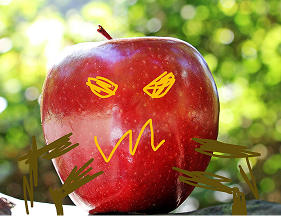

Crab ApplesWritten: aprIl 5th 2022
Researchers find a new species of plant animal hybrid that act as parasites feeding on surrounding trees and plant life. They are often located in parts of the Green house DO NOT CONSUME. This organism comes in many shades and colors taking up the appearence of a regular apple, often as an attempt to blend in with the surrounding flora as it often hides within the branches of trees.
Even though the crabapple seems to siphon energy from the sap of its "host tree"" it also appears to be an omnivore, or at least at the larva/infant stage. As of now there have been a report of 7 deceased individual have been found in the greenhouse areas. This is due to the egg sacs that are contained within the core of each which contain a cluster of 50 to 100 eggs that are coated within a thick mucus protecting them from stomach acid and allowing them to hatch within the digestive system… evidence of ripped tissues have been found inside of the interiors across all examinded bodies. |
 |